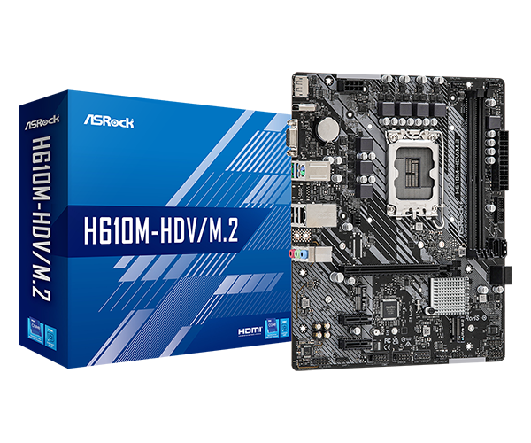
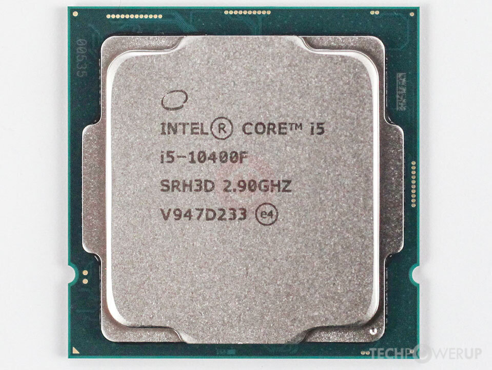
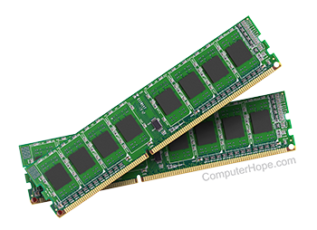
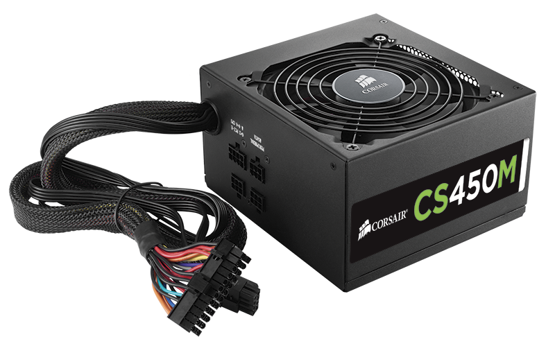
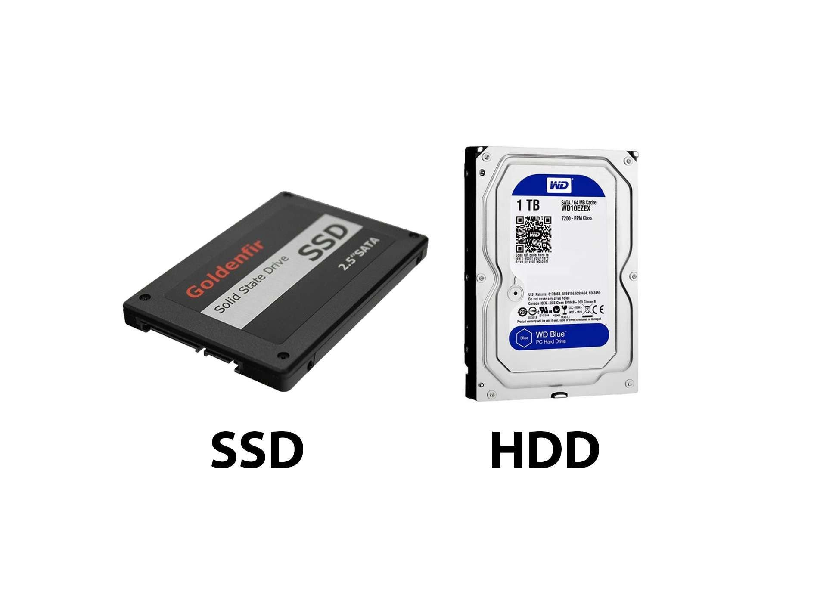
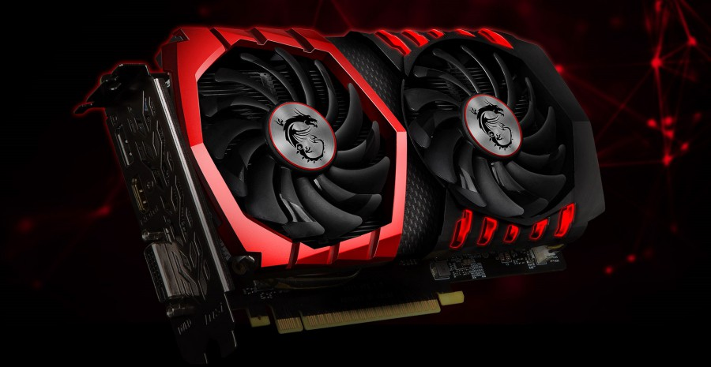
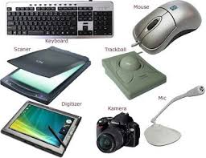
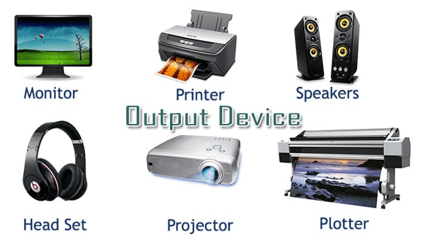

Motherboard
Motherboard atau panggung komputer adalah komponen utama dalam komputer yang digunakan untuk menghubungkan segala perangkat lainnya, termasuk CPU, memory, dan perangkat lainnya, serta digunakan untuk mengatur proses booting dan bagaimana komputer bekerja.
- Mencegah komponen-komponen lainnya ketika komputer dimatikan.
- Menghubungkan CPU dan memory dengan perangkat lainnya.
- Mengatur proses booting dan bagaimana komputer bekerja.
- Memiliki bus-bus yang digunakan untuk menghubungkan perangkat-perangkat lainnya.

Processor
Processor atau CPU (Central Processing Unit) adalah komponen utama dalam komputer yang digunakan untuk menjalankan program dan melakukan perhitungan. CPU memiliki kemampuan untuk mengambil instruksi dari memory dan menjalankannya.
- Menyimpan instruksi dari memory dan menjalankannya.
- Melakukan perhitungan dan memproses data.
- Menghubungkan perangkat-perangkat lainnya dengan memory.
- Mengatur kondisi dan status komputer.

RAM
RAM (Random Access Memory) adalah komponen dalam komputer yang digunakan untuk menyimpan data yang sedang aktif dalam proses komputasi. Data yang disimpan dalam RAM bisa diakses dengan cepat dan mudah.
- Menampung data yang sedang aktif dalam proses komputasi.
- Memiliki kapasitas yang lebih kecil daripada hard disk, tetapi lebih cepat dalam akses data.
- Dapat diganti secara bertahap dengan hard disk.
- Data yang disimpan dalam RAM hilang ketika komputer dimatikan.

Power Supply
Power Supply (PSU) adalah komponen dalam komputer yang digunakan untuk menyediakan listrik yang diperlukan untuk menjalankan komputer. PSU memiliki kapasitas yang lebih kecil daripada hard disk, tetapi lebih cepat dalam akses data.
- Menyediakan listrik yang diperlukan untuk menjalankan komputer.
- Mengubah Arus (AC ke DC): Mengonversi arus listrik AC yang biasa digunakan di rumah ke arus DC yang dibutuhkan sebagian besar perangkat elektronik.

Storage
Storage adalah komponen dalam komputer yang digunakan untuk menyimpan data yang diperlukan untuk menjalankan komputer. Storage memiliki kapasitas yang lebih kecil daripada hard disk, tetapi lebih cepat dalam akses data.
- Menyimpan data yang diperlukan untuk menjalankan komputer.
- Memiliki kapasitas yang lebih besar daripada RAM.
- Ssd biasanya digunakan untuk menginstal OS agar load nya lebih cepat

Kartu Grafis
Kartu Grafis adalah komponen dalam komputer yang digunakan untuk menghasilkan gambar yang akan ditampilkan di layar. Kartu Grafis memiliki kapasitas yang lebih kecil daripada hard disk, tetapi lebih cepat dalam akses data.
- Menghasilkan gambar yang akan ditampilkan di layar.
- Berfungsi lain sebagai rendering

Input
Input adalah komponen dalam komputer yang digunakan untuk memasukkan data ke dalam komputer. Input memiliki kapasitas yang lebih kecil daripada hard disk, tetapi lebih cepat dalam akses data.
- Menghasilkan data yang akan ditampilkan di layar.

Output
Output adalah komponen dalam komputer yang digunakan untuk mengubah data hasil pemrosesan komputer menjadi bentuk yang dapat dipahami pengguna
- Mengubah data hasil pemrosesan komputer menjadi bentuk yang dapat dipahami pengguna.